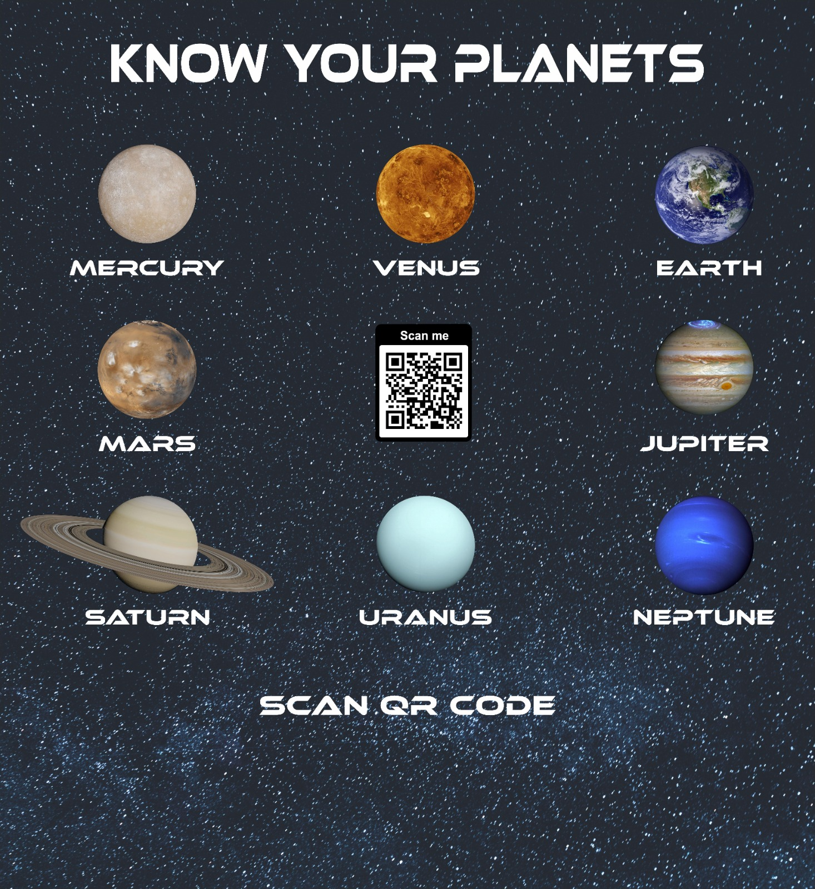

A web-based and AR-enabled interactive activity built for an ISRO-organised children's event. Each planet has a printed marker poster; scanning the QR code on the marker opens an AR experience for that planet. Audio-driven, mobile-first, accessible UX. Solo build, end-to-end.
PlanetSAR is the interactive layer of a children's space-education activity. The Indian Space Research Organisation (ISRO) ran the event; children at the event encountered printed poster markers, one per planet, and used their phones to scan QR codes on each marker to launch an AR experience showing that planet, with audio narration and educational content.
